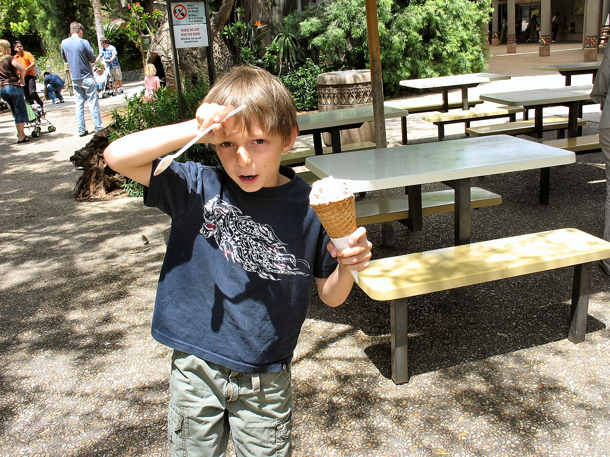

One bite of ice cream, one sudden ache behind your forehead. Brain freeze is not your brain freezing at all — it is a nerve and a blood vessel getting confused.
You take one big, enthusiastic bite of ice cream — or one long, thirsty gulp of an icy slushie — and then it hits. A sharp, throbbing ache right in the middle of your forehead. It is over in seconds, but for those seconds it is all you can feel.
People call it brain freeze. Your brain is not actually freezing. Something much stranger is going on, and it has a scientific name to match: sphenopalatine ganglioneuralgia (say: sfee-no-PAL-uh-teen gang-lee-oh-noo-RAL-juh). Most people just call it an ice-cream headache or a cold-stimulus headache.
What sets it off
The trigger is always the same: something very cold touching a warm spot on the roof of your mouth or the back of your throat. Ice cream, popsicles, crushed-ice drinks and cold smoothies are the usual suspects, especially when you eat or drink them fast and in big mouthfuls.
Your body hates sudden cold that close to home, because it works hard to keep your core temperature steady. So it reacts.
The chain reaction inside your head
Several things happen at once, in this order.
First, the cold makes the blood vessels in the roof of your mouth suddenly tighten up and get narrow — this is called constriction. It is a survival reflex that helps protect your body's core temperature.

Then, just as quickly, those same blood vessels swing the other way and swell open again — doctors call this rebound dilation. The vessels are rushing extra warm blood up into the area to warm it back up.
That fast squeeze-and-release sets off nearby nerves. In particular it wakes up the trigeminal nerve (say: try-JEM-uh-nul), one of the big nerves of the face. The trigeminal nerve senses pain in parts of your face and mouth, and the upper branch of it reaches all the way up into your forehead.
Why the pain lands on your forehead
Here is the clever, slightly glitchy part. The roof of your mouth and your forehead are both wired to that same trigeminal nerve. When the cold in your mouth makes the nerve fire off a pain signal, your brain gets the message but misreads where it is coming from.
So while the real commotion is happening in your mouth, your brain interprets the pain as coming from your forehead instead. That mix-up has a name too — referred pain. It is the same reason a heart problem can sometimes make a person's arm ache: the brain wires crossed at the switchboard.
The result is that sharp, cold ache right in the front of your head, even though nothing up there is cold. It usually fades within a few seconds to a couple of minutes, and it stops on its own as the tissues warm back up.
Who gets it, and what to do
Anyone can get brain freeze, but research suggests people who get migraines are more likely to feel it, probably because their trigeminal nerve and pain pathways are extra sensitive.
The good news: it is harmless, and it is easy to stop. Press your warm tongue flat against the roof of your mouth, sip a warm drink, or just take a breath and wait for your mouth to warm up — the ache will melt away. And to avoid it next time, slow down and take smaller bites and sips of anything frozen.
So no, your brain is safe. It is just a nerve getting its wires crossed by a cold slushie — and if you yawned while reading this, you now know where to read next.
Sources: Cleveland Clinic — Brain Freeze (ice cream headache) · Johns Hopkins Medicine — How to Ease Brain Freeze